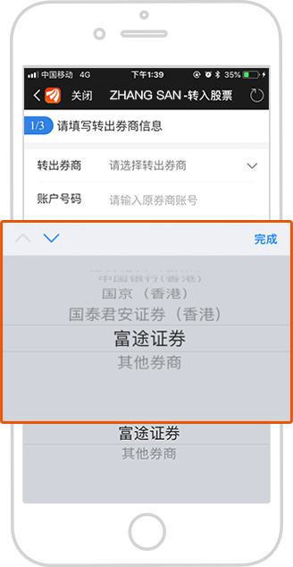
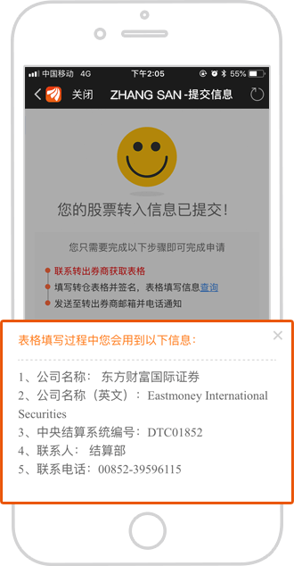

如何转股至东方财富国际证券
转股是指如果您在其他港美股证券账户持有股票市值，在不买卖股票的情况下转入东方财富国际证券港美股账户。具体操作方式如下：
一、东方财富APP提交转入股票信息
操作路径
打开东方财富APP→依次点击【交易】、【港美】→【登录港美股交易账号】→点击【股票转入】根据提示一次操作。
填写转出券商信息
【交易】页面点击【股票转入】，选择【我要转入股票】，填写转出券商信息。
股票信息添加
输入股票代码和转股数量，如一次转多只股票可选择【添加股票】，完善股票信息。
签名确认
本人签名并确认提交股票转入信息。可点击【查询】查看转出表格填写规范。
二、通知原持股机构转出股票
联系原持股机构通知转出股票，获取原持股机构的转出表格并填写有关信息，包括“原券商/银行的名称”、“英文名称”、“结算部电话”、“邮箱”等资料，填写完成发送至对方机构即可
目前东方财富国际证券支持多家券商和银行的股票自助转入，但金融机构不同，操作步骤略有区别：
若从辉立证券（香港）、国信证券（香港）、中国平安证券（香港）等券商转出，可直接下载东方财富国际证券发送至您邮箱的转仓确认邮件中的附件表格，打印后签名，然后发送给对方机构；
若从其他家转出，您可自行联系或由东方财富国际证券协助联系对方机构，获取转出表格，填写并签名后发送至对方机构，或者通过对方公司的APP或官网按提示进行转出股票操作。
 点击查看如何从富途证券转出股票至东方财富国际证券>>温馨提示
1.股票在不同券商间的转移只限于同名账户的转移
2.转入股票东方财富国际证券不收取任何费用，转出机构（银行/券商）收取一定费用。
3.转入股票的时间取决于对方券商，一旦对方券商转出股票，东方财富国际证券将在1-2个工作日内存入客户账户。
24小时客服热线：400-920-1822
东方财富国际证券为上市公司东方财富（sz,300059）成员企业是香港证监会认可的持牌法团（中央编号：ATR761）